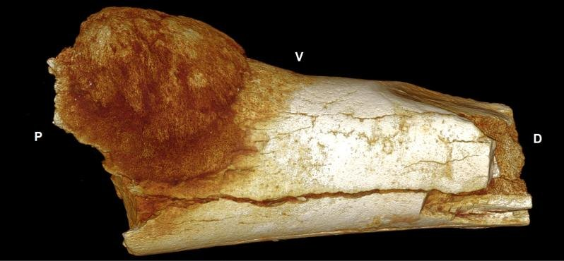
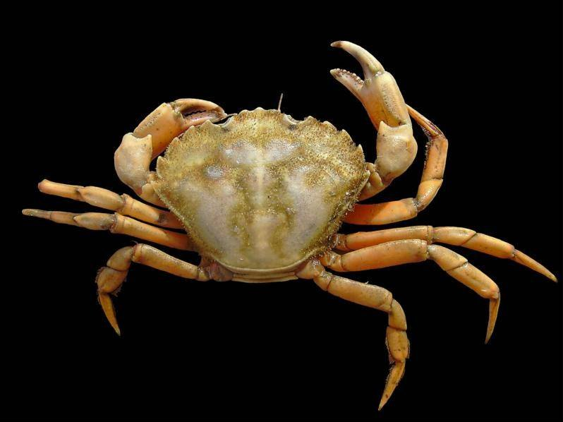
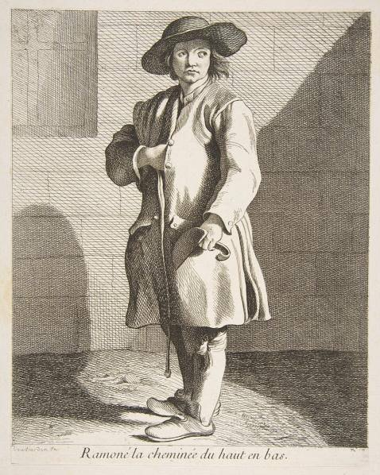
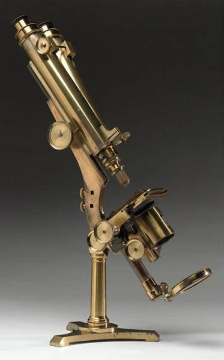
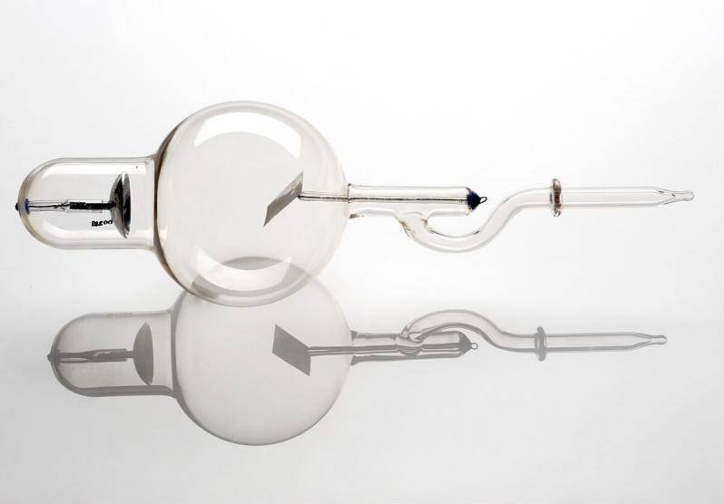
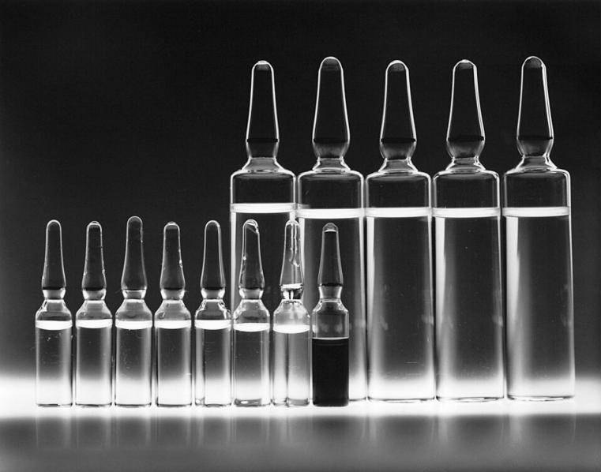
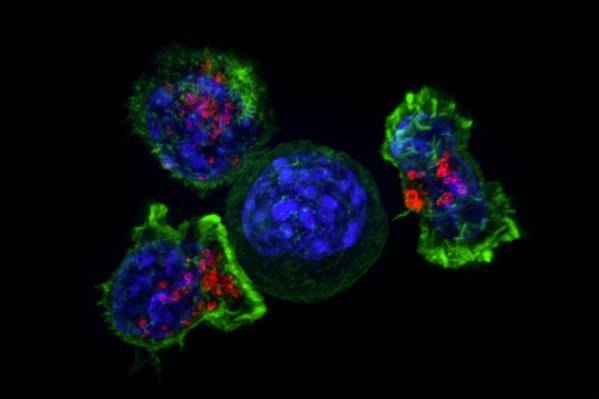
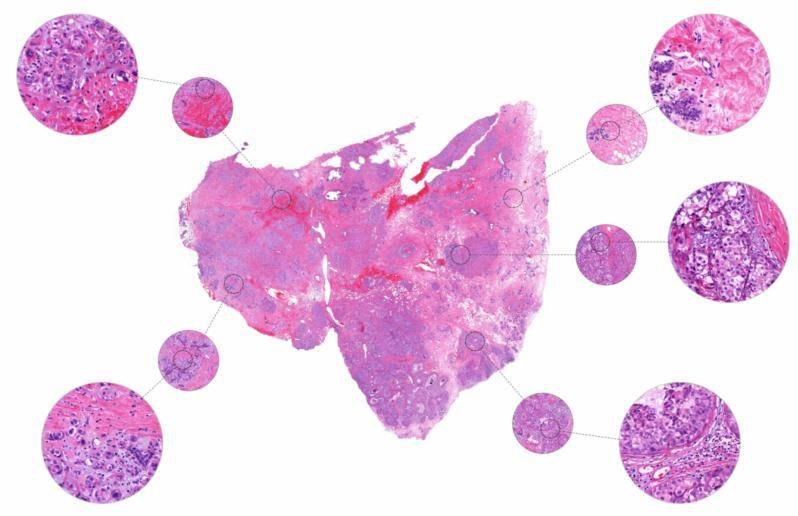
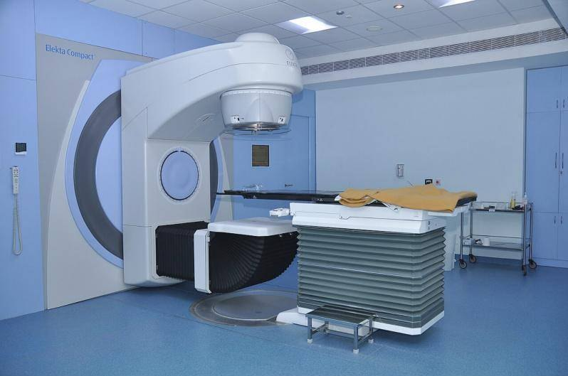

Understanding Cancer
How cancer starts, its long history, and how we find, treat and prevent it today.
Press Space or → for the next slide. On a phone, swipe or tap Next.
What is cancer?
A disease in which some of the body's own cells grow out of control.
- The cells can pile up into a lump called a tumor.
- A benign tumor stays in one place. It is not cancer.
- A malignant tumor invades nearby tissue and can spread through the blood and lymph. This spread is called metastasis.
How a healthy cell turns into cancer
Healthy cells divide only when the body needs new ones.
DNA gets damaged by smoke, UV light, some viruses or copying mistakes.
The cell keeps dividing and its copies form a tumor.
Cancer cells spread through the blood to other organs.
Usually a damaged cell repairs itself or dies. Cancer needs several DNA changes, which often take years.
The oldest evidence of cancer
- Scientists found bone cancer (osteosarcoma) in a foot bone of an early human relative.
- The fossil comes from Swartkrans Cave in South Africa.
- 3D scans confirmed the diagnosis in 2016. Cancer is not a modern disease.

The oldest written description: the Edwin Smith Papyrus
- This Egyptian medical scroll describes 8 cases of tumors of the breast.
- It is a copy of an even older text, perhaps from 3000 to 2500 BCE.
- Doctors burned the tumors with a hot tool, but the scroll says there is no treatment.
New in 2024: cut marks around tumors on an Egyptian skull from about 2600 BCE may be the oldest attempt to treat or study cancer.
Why is it called cancer?
- The Greek doctor Hippocrates called tumors karkinos, the Greek word for crab.
- The swollen veins around a tumor reminded him of a crab's legs.
- The Roman doctor Celsus turned it into the Latin word cancer.
- Later, Galen used oncos (swelling), which gave us the word oncology.

Scientists start to understand cancer


Rays that fight cancer
- 1895: Wilhelm Röntgen discovered X-rays.
- 1898: Marie and Pierre Curie discovered radium.
- Soon radiation was used to shrink tumors. It was the first cancer treatment besides surgery.

The first cancer medicines
- 1942: doctors at Yale gave the first chemotherapy, nitrogen mustard, to a patient with lymphoma.
- 1947: Sidney Farber treated children with leukemia using a drug called aminopterin.
- 1950: large studies linked smoking to lung cancer.

Genes, vaccines and the immune system
- 1976: scientists found oncogenes, genes that can push a cell to become cancer.
- 2001: imatinib became one of the first targeted drugs, for a type of leukemia.
- 2006: the first HPV vaccine was approved, to prevent cervical cancer.
- 2018: a Nobel Prize honored immunotherapy, which helps the immune system attack cancer.

Cancers are named after the cells where they start
There are more than 100 kinds. These are the main groups.
Carcinoma
Skin and the lining of organs. The most common group.
Sarcoma
Bone, muscle, fat and other soft tissue.
Leukemia
Blood-forming cells in the bone marrow.
Lymphoma
Immune cells in the lymph nodes.
Melanoma
Pigment cells that color the skin.
Brain tumors
Cells of the brain and spinal cord.
Cancer in numbers
Sources: WHO cancer fact sheet (July 2026) and WHO Global Status Report on Cancer 2026.
Lung cancer is the most common and the deadliest
Worldwide in 2024. Breast cancer is second for new cases, but colorectal and liver cancers cause more deaths.
Both views use the same scale. Most common in men: lung, prostate, colorectal. In women: breast, colorectal, lung. Source: WHO.
What causes cancer?
- Nearly 1 in 4 cancer deaths are linked to tobacco, alcohol, excess weight, unhealthy food and too little exercise.
- About 1 in 10 cancers are caused by infections such as HPV, hepatitis B and C, and H. pylori.
- UV light, air pollution and some chemicals at work also damage DNA.
- Risks you can't change: getting older, and genes passed down in families.
Warning signs to watch for
- A new lump or swelling
- Weight loss without trying
- A cough or hoarse voice that won't go away
- A mole that changes
- Unusual bleeding
- A sore that doesn't heal
Also: changes in toilet habits, trouble swallowing, constant tiredness, or pain with no clear cause.
These signs are usually caused by something else. But if one lasts more than a few weeks, see a doctor.
How doctors find cancer
- Screening: tests for healthy people, like HPV tests and mammograms for women aged 50 to 69.
- Scans: X-ray, ultrasound, CT, MRI and PET show where a tumor is.
- Biopsy: a tiny piece of tissue is checked under a microscope. This confirms cancer.
- Lab tests: blood and genetic tests help choose the best treatment.

Stages: how far the cancer has spread
Stage 0
Only in the layer where it started
Stage I
Small and has not spread
Stage II
Larger, grown deeper
Stage III
Reached nearby lymph nodes
Stage IV
Spread to other organs
The exact rules differ for each cancer. Lower stages are usually easier to treat.
Main treatments
- Surgery removes the tumor.
- Radiotherapy aims beams of radiation at the tumor to destroy cancer cells.
- Chemotherapy uses medicines that kill fast-dividing cells. Side effects like hair loss usually go away.
- Hormone therapy blocks hormones that some breast and prostate cancers need.
Doctors often combine treatments, depending on the type of cancer, its stage and the person's health.

Newer treatments and care
- Targeted therapy attacks one specific change inside cancer cells.
- Immunotherapy helps the immune system find and destroy cancer cells.
- Stem cell transplant rebuilds the blood after strong treatment, mostly for blood cancers.
- Palliative care eases pain and other symptoms. For advanced cancer it brings relief to more than 9 in 10 patients.
How to lower your risk
Tick the ones you already do. You do 0 of 6.
Also: keep smoke out of your home, and go for screening when it is offered.
Myth or fact?
MythYou can catch cancer from someone.
FactCancer is not contagious. Some viruses linked to it, like HPV, do spread, and vaccines protect against them.
MythCancer always means death.
FactMany cancers can be cured. Breast, cervical, mouth and colorectal cancers have a high chance of cure when found early.
MythOnly old people get cancer.
FactAbout 400,000 children and teenagers get cancer each year, and many childhood cancers can be cured.
More myths
MythIf nobody in my family had cancer, I'm safe.
FactOnly about 5 to 10% of cancers come from inherited genes. Most come from DNA changes during life.
MythSugar makes cancer grow faster.
FactCutting out sugar won't starve a tumor. But too much sugar can cause weight gain, which raises the risk.
MythEvery lump is cancer.
FactMost lumps are harmless, like cysts or swollen glands. A new lump should still be checked by a doctor.
Quiz: question 1 of 5
What happens in cancer?
Score: 0 of 5
Quiz: question 2 of 5
Which cancer caused the most deaths in 2024?
Score: 0 of 5
Quiz: question 3 of 5
Can you catch cancer from another person?
Score: 0 of 5
Quiz: question 4 of 5
Which vaccine helps prevent cervical cancer?
Score: 0 of 5
Quiz: question 5 of 5
How do doctors usually confirm cancer?
Score: 0 of 5
Thank you!
Any questions?
- If you are worried about a symptom, talk to a doctor. Most of the time it is not cancer, and checking early is always worth it.
- If someone you know has cancer, a message, a visit or help with everyday jobs can mean a lot.
Sources
This slideshow is for learning only and is not medical advice. Facts checked November 2026.
- WHO: Cancer fact sheet, 3 July 2026
- WHO Global Status Report on Cancer 2026, news release, 8 July 2026
- WHO: Cancer health topic
- American Cancer Society: A Brief History of Cancer
- National Cancer Institute: Milestones in Cancer Research
- Odes and others, 2016: earliest hominin cancer, South African Journal of Science
- Frontiers, 2024: Egyptian skull with cut marks around tumors
- Yale School of Medicine: The birth of chemotherapy
Photo credits
Photos are from Wikimedia Commons and an open research paper, resized to fit. The label was removed from the fossil scan. The drawings and charts were made for this slideshow.
- Fossil scan: Odes and others, 2016, CC BY
- Edwin Smith Papyrus: public domain
- Shore crab: Hans Hillewaert, CC BY-SA 4.0
- Chimney sweep: The Met Museum, CC0
- Microscope, 1860s: Wellcome Collection, CC BY 4.0
- X-ray tube, 1896: Wellcome Collection, CC BY 4.0
- Chemotherapy vials: Bill Branson, NCI, public domain
- Killer T cells: NIH, public domain
- Stethoscope: Jacek Halicki, CC BY-SA 4.0
- Tumor biopsy: KajsaMollersen, CC BY-SA 4.0
- Radiotherapy machine: Narenfox, CC BY-SA 4.0
- Market stall: Christine Matthews, CC BY-SA 2.0